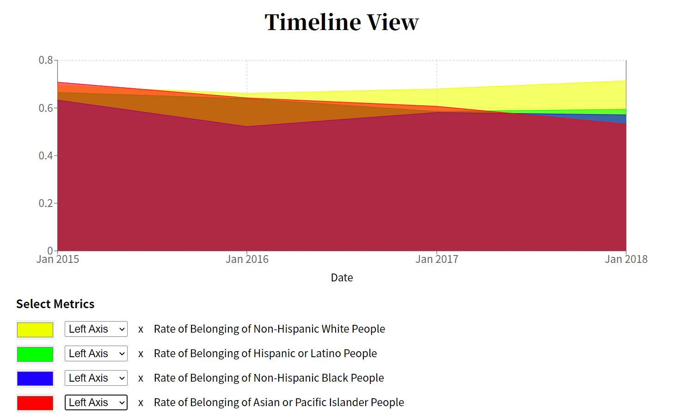
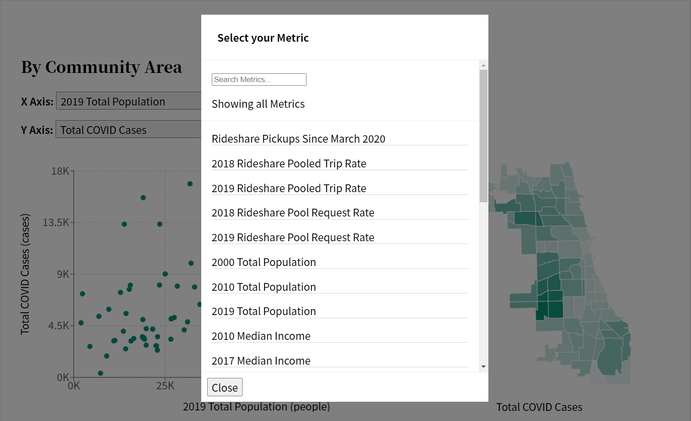
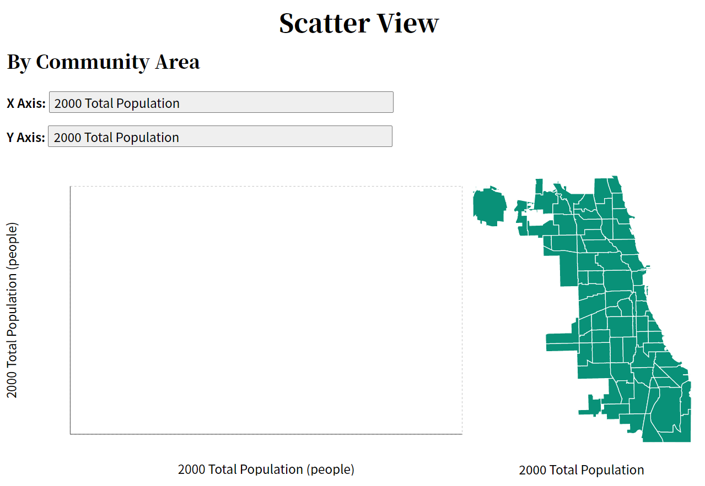

Metrics, Modals, and More: My First Software Engineering Internship
This summer, I interned as a software engineer on TransitHealth: a project to help Chicagoans explore data about how transportation and public health have changed since COVID, developed by Scarlet Data Studio.
But how much data is too much? With ten engineers adding new datasets, our interface soon had an overwhelming number of metrics to choose from. I built a new component to make it more usable.
One of the essential features that TransitHealth offers to its users is the ability to compare community areas by various metrics on a scatter plot and map. The following two images show two different styles of selecting metrics.
Original Metric SelectorNew Metric Selector
Clearly, both selectors are functional. The original metric selector is simple and supported by all browsers. The new metric selector, however, was designed to:
Make metrics searchable via user input
Group metrics by dataset
Display correctly on different-sized screens
This is just one of many contributions I am most proud of from my internship. In the rest of this blog post, I will share more details with you about
Adding metrics to TransitHealth about community belonging
Developing a new metric selector
Making the app more reliable with integration testing
Lessons I learned about software engineering
TransitHealth
The selector from the introduction is a component of a larger project known as TransitHealth, developed by the Scarlet Data Studio. The site is designed to help people explore data surrounding public health and transit in Chicago. To do this, the site uses both an Explore section and a Questions section, both of which use data metrics to illustrate statistics over different periods on Chicago health and transit. Metrics range from population to income, to statistics on ridership of the CTA, and even belonging rate among Chicago’s inhabitants.
Metrics
One of the first things I did was add a new metric of my own. I took responsibility for the community belonging dataset. This data is published to the Chicago Health Atlas after being collected by the Healthy Chicago Survey, which is conducted by the Chicago Department of Public Health. On the Atlas, this dataset is described as the “percent of adults who reported that they strongly agree or agree that they really feel part of their neighborhood.” The latest data on community belonging is from 2018, but still offers a valuable perspective on attitudes prior to COVID.
Here are some examples of what the data looks like in both the Scatter Plot and the Timeline.
Scatter Plot

Timeline View
Once I was able to see the data in their respective graphs, I observed several interesting trends. The rate of belonging for the entire city, for example, remained fairly consistent over the four year period seen in the Timeline. When you look at the data for different races and ethnicities, it shows a downward trend. As shown in the image above, Asian or Pacific Islander People had the lowest Rate of Belonging in 2018, at just 53%.
In order to implement these metrics into the website, several steps had to be taken:
Extract the data using the Chicago Health Atlas API using Python and Pandas
Transform the data to include other necessary information, such as area number or population segment.
Load the transformed data into an SQLite database file so it can be accessed by the backend and frontend.
Examples of these steps, collectively known as the offline pipeline, can be seen illustrated in this diagram.
A Demo of the Offline Pipeline
In order to extract, we must interact with two separate endpoints that the Chicago Health Atlas API has. One is to get data, while the other is to get the coverage of the data. From the coverage endpoint, we can gather what years, geographic breakdowns, and population segments the Health Atlas has community belonging data for. Thus, I wrote a script to first get the coverages, then request the data for those coverages.
The Python script used to extract the data from the Chicago Health Atlas API
The data provided is defined in a certain way, where community area statistics are not split into different population segments, while statistics for the entire city are. As such, we take the data and split it, handling it depending on if the data is on a community area basis, or for the entire city. This can be seen with the difference between df_coverage_area and df_coverage_city. Finally, it is concatenated together to form the entire dataset that can be transformed and loaded into the database.
Transforming the data is, fortunately, a simple procedure. A script reads the extracted data CSV, and does a few things. It takes the period and splits it into a start year and end year. Then it takes the population and defines it as a new field called segment, checking if the population is empty. If it is empty, this means the data is referring to the entire population of Chicago and is set to “all”. Finally, the community area number is taken from the geolocation ID and put into its own field. This is essential for when we put it into the database.
Finally, to load the resulting transformed information into the database, we use an SQL Table script to create a table specifically for the Belonging Rate data. This is where we store the value of each community area or population based on the period_end_year. To keep track of which part of the data we’re looking at, we include a layer field that distinguishes between community area data or city-wide data.
Once the data was loaded into the database, I created metrics in both the API and the frontend. I wrote SQL queries to fetch the data needed for the metrics in a common format, and add my metrics to the endpoints that connected the frontend and backend to each other. Using these metrics, I then created several unit tests that ensured the database and metrics were performing the correct functionality.
It may be a bit confusing as to why TransitHealth goes through this effort to load data into a database that’s already present in the Chicago Atlas API. However, the reason to do so is important to serving the project website. The Chicago Health Atlas provides one or two visualizations for the data it collects, which is very useful on its own. However, when TransitHealth extracts the data, transforms it, and loads it into its own database, it allows the team to create more visualizations and analyses on that data. The Atlas API provides anyone with a large set of numbers and information, but projects like TransitHealth can expand on the data by creating tables and charts, and graphs that can help users understand the data better than if they stared at a large CSV or JSON file of data.
Modals
As the number of metrics the team added and tested grew, revamping the metrics selector was a way I could improve the product’s user experience. The replacement was set to be a modal that would be able to incorporate a search feature and would allow the user to click on the metric of their choice. Designing this as a brand new, separate component involved using React, JavaScript and CSS in order for it to function and be styled properly.
The modal’s first iteration was a slightly better looking selector.

The modal’s second iteration, now with a search bar and better styling.The modal’s final design iteration. It includes new group headers and a description.
At first, the modal functioned similarly to the old selector, where every metric was printed as a single paragraph element, and users could click on the text to select the metric. It was functional, but still lacked cohesive UI design as well as several requirements for this new modal.
The next feature I focused on was the ability to search, and was set up similarly to other search bars that provide search results in real-time, rather than needing the user to hit the enter key or pressing a search button. In the code, these search results are used to filter out all of the supported metrics that could be shown on the scatter plot graph, providing a list for the user to choose from.
These search results would later be used to group all metrics by the dataset they belong to. This was done by creating a dictionary where the keys were the datasets, and the values were arrays of metrics belonging to that dataset. This dictionary was then transferred into an array of dictionaries, where each index was a single key:value pair of each dataset. This allowed us to sort the datasets based on the number of metrics they contained, so those with the most metrics would appear first. Integrating this with the search results allowed the site to dynamically build a list of metrics grouped by dataset, which were displayed in order of greatest number of metrics to least.
From then on, grouped search results became their own component, which allowed the metrics selector to be modular. If any engineers wanted to develop new ways of showing results in the future, the simple search results could be used as a basis.
With these new features, the modal was styled with CSS to further improve the end-user experience. This included changing the spacing and font of the search results, changing the behavior when a mouse pointer is hovering over each metric, and ensuring that the modal would function correctly even when used on mobile platforms.
Bug Finding
Working as a Software Engineer Intern for TransitHealth meant some of my time was spent finding and fixing different types of bugs, all with different causes and symptoms.
One of the first bugs I found was that the command line interface to access our SQLite database did not work. The startup sequence depended on Python version 3.8+, but the interns were all using Python 3.7. I did some more digging and worked with my mentor to write a new command that would allow everyone on the team to connect and run queries.
During the process of implementing the belonging rate metrics, I had found a bug where the community area map would have the same shade of green regardless of the value. This shade of green, known as opacity, was calculated based on the maximum value returned by the metric. However, one of the community areas had its value as NaN, which meant the max value was set to NaN, and ultimately caused the map to have one solid opacity. After doing some testing and looking through the codebase and the data, I discovered that one of the community areas had no available data from the Chicago Health Atlas. As a result, me and my mentor were able to find a solution to handle any future cases of community areas not having data.
While I was doing some testing for my new metric selector modal on a mobile platform, I found another bug with a specific metric: The Total Population for the year of 2000. When choosing this metric, the scatter plot and map would be blank. I went ahead and did further testing and code review, and I found nothing wrong with the code I or other team members had developed. Afterward, I double-checked the Chicago Health Atlas API and quickly found that the data that was previously available had been removed. The external data source being removed caused the code to extract empty data from the API, which is what caused the website to display an empty plot and a blank map. In the end, my mentor and I decided to simply remove the metric.

The bug described, where selecting the "2000 Total Population" metric returned a blank graph.
Lastly, I found another bug while doing some pair programming with my mentor. When you had the tooltip open while switching the metric, the tooltip would display an NaN value and occasionally would break the webpage. What happened was the tooltip was attempting to show data from the old metric, which it no longer had, instead of the data from the new metric. This was referred to as stale data being displayed. To solve this, my mentor implemented some code that closes the tooltip when the metric is changed.
The tooltip here is showing “NaN% of people” as a result of the bug
Cypress
After several weeks of working on the TransitHealth team and finding all of these different bugs, it became clear that we needed another layer of testing to better catch bugs and issues in the codebase. What we had currently in place involved unit tests for the database, reviewing code before it was pushed to the main branch, and a handful of tests that only made sure the website could build properly. There was nothing to test if the website actually provided the features properly. Even if the website could build, it didn’t mean anything if trying to change a metric or click on a button caused an error, displayed an incorrect value, or returned a blank screen.
As such, I decided to directly work on a solution, and the solution we found was called Cypress. End-to-end integration tests built using Cypress were exactly what we needed to test the functionality of the website and the API behind it. It meant we could make sure data was returning and everything was displayed as intended.
Cypress tests perform a list of commands and assertions in sequential order. It allows you to test your frontend directly by visiting the website, interacting with the UI, and checking if elements function or change the way they’re supposed to.
An example of what a Cypress test file contains.What the test looks like during execution.
The goal was to take these Cypress tests and create a GitHub Action that would test the codebase’s functionality for every pull request that occurred. In doing this, we can ensure the frontend remains working properly with new changes, and in the case that the test does fail, we will be able to quickly determine the cause of the issue and fix it as soon as possible.
In order to accomplish this, the test had to be set up in a way that allowed GitHub Actions to test a local, development version of both the frontend and backend with all the new changes of the pull request. Using these components locally built is important, so the GitHub action uses various start and build commands alongside Cypress to do so. This also lets us save screenshots and videos as artifacts for debugging.
Example of the check GitHub performs when a developer makes a pull request.
Lessons Learned
I began my career as a student at the Illinois Institute of Technology with a sincere and determined passion for technology and the ever-expanding industry behind it. What started off as a childish hobby of playing video games and tinkering with computers quickly turned into my devotion to learning all of the exciting prospects that modern technology has to offer, from the latest computer hardware and architectures to ongoing research in artificial intelligence.
I entered this internship prepared to work and learn alongside a team of engineers to create an informative website about public health, and even now I am incredibly astonished and proud of everything I have managed to not only learn but also apply. I was able to become familiar with JavaScript and Python again while also learning new languages and libraries such as React, JSX, and Cypress. With these, I was able to apply it to the TransitHealth codebase and improve the project as a whole.
Not only that but I learned a variety of other things in regards to the industry of software engineering, the way it interacts with society, and forms a work culture unique to all different teams and companies.
If you’re a student doing their first internship, it’s important to keep a few things in mind.
Ask plenty of questions: Asking a mentor questions shows your interest and desire to learn, especially when you need help
Have an open mind: Be ready to expand your knowledge, libraries like React and Cypress will challenge your existing understanding.
Do what interests you: If given the choice, learn what you want to learn. I was able to learn React and Cypress because they interested me.